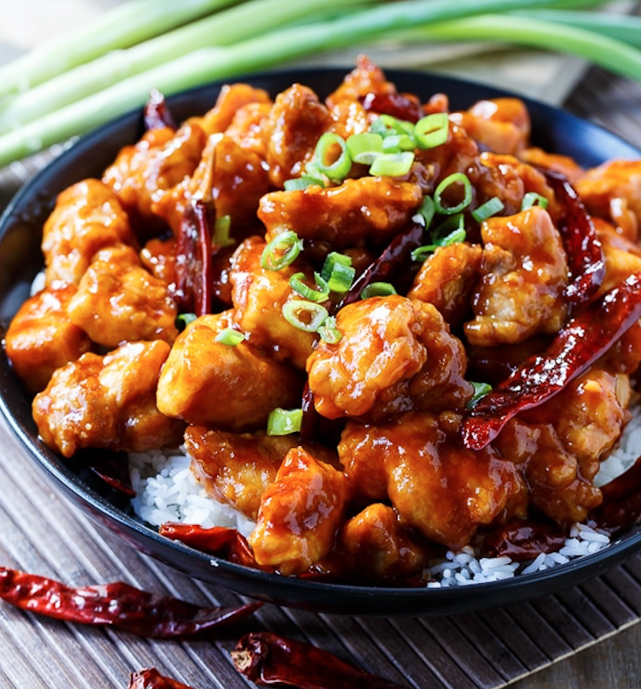
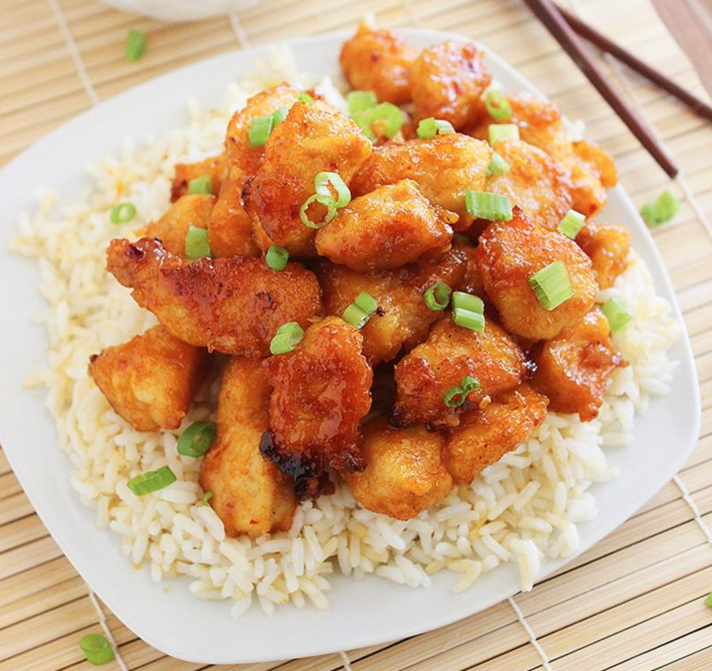

This is one of a slightly altered recipe that you would find on All Recipes. This is one of my personal favorite meals to make at home. Easy and delicious!
Prep
Cook
Total
Servings
10 mins
12 mins
22 mins
4

This picture is the chicken cooking in the pan, with hot chillies
Ingredients
1 tablespoon of brown sugar
2 tablespoons of honey
1/4 cup of low sodium soy sauce
1/4 teaspoon of ground ginger
2 small cloves of chopped garlic (use garlic press)
1 tablespoon of Sriracha hot sauce
1/4 teaspoon of salt
1/4 teaspoon of pepper
3 tablespoons of all purpose flour
4 skinless, boneless chicken breast halves — cut into 1/2 inch strips
1 tablespoon of canola oil
Directions
In a small bowl, mix brown sugar, honey, soy sauce, ginger, garlic, and hot sauce. Stir thoroughly and set aside.
Measure flour, salt, and pepper into a quart or gallon size plastic bag. Seal bag and sake to mix the ingredients together. Add chicken and shake to coat the chicken.
Heat oil in a large skillet over medium heat. Add chicken strips and brown on both sides, about 1 minute per side.
Pour the sauce over the chicken. Lower heat slightly. Simmer uncovered, stirring frequently until the sauce thickens. This takes about 8 minutes.

This picture compliments sweet and spicy chicken with rice and cilantro
Feel free to compliment any sides of your choosing. I personally like serving this with spaghetti and sauteéd spinach.
Recipe is a combination from All Recipes and Aaron Lack